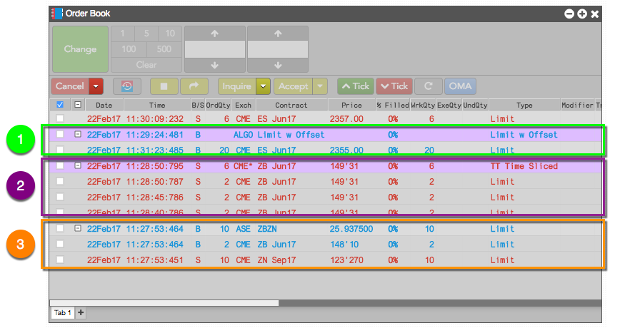
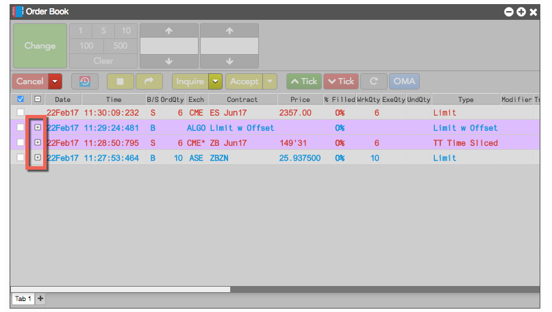
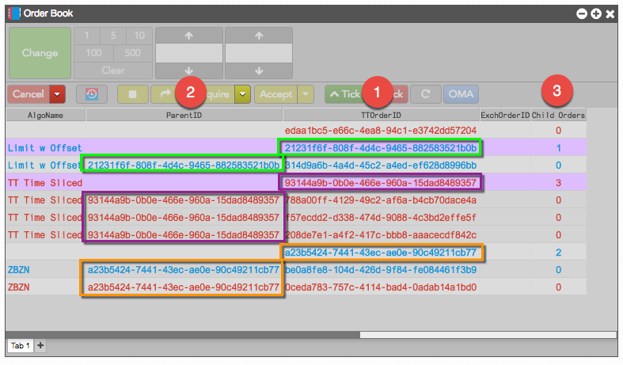

An algo or synthetic order is an order managed within TT that submits orders to the exchanges. A synthetic order consists of a parent order and the child orders it submits to the exchanges. TT supports a variety of synthetic orders, including:
The Order Book displays synthetic orders with child orders nested below the parent order.

ADL Algo parent synthetic order. ADL algo parent orders show ALGO in the Exch column and list the name of the algo (Limit w Offset) in the Contract and Type columns.
In this example, you can see that the parent order manages one child limit order.
TT Order Type synthetic parent order. TT Order type parent orders show the exchange name followed by an asterisk (CME*) in the Exch column and the name of the TT Order type (TT Time Sliced) in the Type column.
You can see that this parent order manages the three child limit orders shown in the rows below it.
Autospreader parent order. Autospreader parent orders show ASE in the Exch column and the name of the spread (ZBZN) in the Contract column
Here, you can see that the parent order manages the two child limit orders below it.
The Order Book allows you to hide child orders by collapsing their parent orders.

The TTOrderID, ParentID, and Child Orders columns also provide information to identify parent synthetic orders and their associated child orders.
